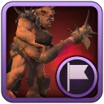

Talent
Wildfire
Wildfire is a level 8 talent of Fizzwick Emberhorn.
Wildfire is a talent of Fizzwick Emberhorn, offered at player level 8 to the Bombardier and Firestarter builds.
Description
Kindling burns for 6 seconds.
What it changes
- The change takes effect from the next fight.
- A talent is kept for the rest of the match.
Ability
| Ability | Timing | Description | |
|---|---|---|---|
| Before the talent |  Kindling Kindling | Passive | Every enemy Fizzwick attacks is set on fire for 3 seconds, taking magical damage every second. He also regenerates 10 health per second. |
| With the talent |  Wildfire Wildfire | Passive | Every enemy Fizzwick attacks is set on fire for 6 seconds, taking magical damage every second. He also regenerates 10 health per second. |
Before and after
Everything that differs between the two forms. Anything not listed is the same in both.
| What changes | Kindling (original) | Wildfire (upgraded) |
|---|---|---|
| Each attack that lands: Burning on the enemy hit: duration (s) | 3 | 6 |
The choice
At each talent level you are shown the options for your build and keep one. Taking Wildfire means giving up the other option of that level for the rest of the match.
| Build | Player level | Competes with | The alternative |
|---|---|---|---|
| Bombardier and Firestarter | 8 |  Overcharge | Fizzwick also casts Overcharge. |
The full ladders are on the talents page; the rules are on How commanders work.